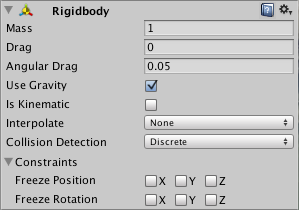

Rigidbody
Rigidbodies enable your GameObjects to act under the control of physics. The Rigidbody can receive forces and torque to make your objects move in a realistic way. Any GameObject must contain a Rigidbody to be influenced by gravity, act under added forces via scripting, or interact with other objects through the NVIDIA PhysX physics engine.

Properties
| Property: | Function: |
|---|---|
| Mass | The mass of the object (in kilograms by default). |
| Drag | How much air resistance affects the object when moving from forces. 0 means no air resistance, and infinity makes the object stop moving immediately. |
| Angular Drag | How much air resistance affects the object when rotating from torque. 0 means no air resistance. Note that you cannot make the object stop rotating just by setting its Angular Drag to infinity. |
| Use Gravity | If enabled, the object is affected by gravity. |
| Is Kinematic | If enabled, the object will not be driven by the physics engine, and can only be manipulated by its Transform. This is useful for moving platforms or if you want to animate a Rigidbody that has a HingeJoint attached. |
| Interpolate | Try one of the options only if you are seeing jerkiness in your Rigidbody's movement. |
| - None | No Interpolation is applied. |
| - Interpolate | Transform is smoothed based on the Transform of the previous frame. |
| - Extrapolate | Transform is smoothed based on the estimated Transform of the next frame. |
| Collision Detection | Used to prevent fast moving objects from passing through other objects without detecting collisions. |
| - Discrete | Use discrete collision detection against all other Colliders in the Scene. Other colliders will use discrete collision detection when testing for collision against it. Used for normal collisions (This is the default value). |
| - Continuous | Use Discrete collision detection against dynamic Colliders (with a Rigidbody) and sweep-based continuous collision detection against static Colliders (without a Rigidbody). Rigidbodies set to Continuous Dynamic will use continuous collision detection when testing for collision against this rigidbody. Other rigidbodies will use Discrete Collision detection. Used for objects which the Continuous Dynamic detection needs to collide with. (This has a big impact on physics performance, leave it set to Discrete, if you don't have issues with collisions of fast objects) |
| - Continuous Dynamic | Use sweep-based continuous collision detection against GameOjects set to Continuous and Continuous Dynamic collision. It will also use continuous collision detection against static Colliders (without a Rigidbody). For all other colliders, it uses discrete collision detection. Used for fast moving objects. |
| - Continuous Speculative | Use speculative continuous collision detection against Rigidbodies and Colliders. This is also the only CCD mode that you can set kinematic bodies. This method tends to be less expensive than sweep-based continuous collision detection. |
| Constraints | Restrictions on the Rigidbody's motion:- |
| - Freeze Position | Stops the Rigidbody moving in the world X, Y and Z axes selectively. |
| - Freeze Rotation | Stops the Rigidbody rotating around the local X, Y and Z axes selectively. |
Details
Rigidbodies allow your GameObjects to act under control of the physics engine. This opens the gateway to behaviors such as realistic collisions and varied types of joints. Manipulating your GameObjects by adding forces to a Rigidbody creates a very different feel and look than adjusting the Transform Component directly. Generally, you shouldn't manipulate the Rigidbody and the Transform of the same GameObject - only one or the other.
The biggest difference between manipulating the Transform versus the Rigidbody is the use of forces. Rigidbodies can receive forces and torque, but Transforms cannot. Transforms can be translated and rotated, but this is not the same as using physics. You'll notice the distinct difference when you try it for yourself. Adding forces/torque to the Rigidbody will actually change the object's position and rotation of the Transform component. This is why you should only be using one or the other. Changing the Transform while using physics could cause problems with collisions and other calculations.
Rigidbodies must be explicitly added to your GameObject before they will be affected by the physics engine. You can add a Rigidbody to your selected object from Components->Physics->Rigidbody in the menu. Now your object is physics-ready; it will fall under gravity and can receive forces via scripting, but you may need to add a Collider or a Joint to get it to behave exactly how you want.
Parenting
When an object is under physics control, it moves semi-independently of the way its transform parents move. If you move any parents, they will pull the Rigidbody child along with them. However, the Rigidbodies will still fall down due to gravity and react to collision events.
Scripting
To control your Rigidbodies, you will primarily use scripts to add forces or torque. You do this by calling AddForce() and AddTorque() on the object's Rigidbody. Remember that you shouldn't be directly altering the object's Transform when you are using physics.
Animation
For some situations, mainly creating ragdoll effects, it is neccessary to switch control of the object between animations and physics. For this purpose Rigidbodies can be marked isKinematic. While the Rigidbody is marked isKinematic, it will not be affected by collisions, forces, or any other part of the physics system. This means that you will have to control the object by manipulating the Transform component directly. Kinematic Rigidbodies will affect other objects, but they themselves will not be affected by physics. For example, Joints which are attached to Kinematic objects will constrain any other Rigidbodies attached to them and Kinematic Rigidbodies will affect other Rigidbodies through collisions.
Colliders
Colliders are another kind of component that must be added alongside the Rigidbody in order to allow collisions to occur. If two Rigidbodies bump into each other, the physics engine will not calculate a collision unless both objects also have a Collider attached. Collider-less Rigidbodies will simply pass through each other during physics simulation.

Add a Collider with the Component->Physics menu. View the Component Reference page of any individual Collider for more specific information:
- Box Collider - primitive shape of a cube
- Sphere Collider - primitive shape of a sphere
- Capsule Collider - primitive shape of a capsule
- Mesh Collider - creates a collider from the object's mesh, cannot collide with another Mesh Collider
- Wheel Collider - specifically for creating cars or other moving vehicles
- Terrain Collider - handles collision with Unity's terrain system
Compound Colliders
Compound Colliders are combinations of primitive Colliders, collectively acting as a single Collider. They come in handy when you have a model that would be too complex or costly in terms of performance to simulate exactly, and want to simulate the collision of the shape in an optimal way using simple approximations. To create a Compound Collider, create child objects of your colliding object, then add a Collider component to each child object. This allows you to position, rotate, and scale each Collider easily and independently of one another. You can build your compound collider out of a number of primitive colliders and/or convex mesh colliders.

In the above picture, the Gun Model GameObject has a Rigidbody attached, and multiple primitive Colliders as child GameObjects. When the Rigidbody parent is moved around by forces, the child Colliders move along with it. The primitive Colliders will collide with the environment's Mesh Collider, and the parent Rigidbody will alter the way it moves based on forces being applied to it and how its child Colliders interact with other Colliders in the Scene.
Mesh Colliders can't normally collide with each other. If a Mesh Collider is marked as Convex, then it can collide with another Mesh Collider. The typical solution is to use primitive Colliders for any objects that move, and Mesh Colliders for static background objects.
Continuous Collision Detection
Continuous collision detection is a feature to prevent fast-moving colliders from passing each other. This may happen when using normal (Discrete) collision detection, when an object is one side of a collider in one frame, and already passed the collider in the next frame. To solve this, you can enable continuous collision detection on the rigidbody of the fast-moving object. Set the collision detection mode to Continuous to prevent the rigidbody from passing through any static (ie, non-rigidbody) MeshColliders. Set it to Continuous Dynamic to also prevent the rigidbody from passing through any other supported rigidbodies with collision detection mode set to Continuous or Continuous Dynamic. Continuous collision detection is supported for Box-, Sphere- and CapsuleColliders. Note that continuous collision detection is intended as a safety net to catch collisions in cases where objects would otherwise pass through each other, but will not deliver physically accurate collision results, so you might still consider decreasing the fixed Time step value in the TimeManager inspector to make the simulation more precise, if you run into problems with fast moving objects.
Use the right size
The size of the your GameObject's mesh is much more important than the mass of the Rigidbody. If you find that your Rigidbody is not behaving exactly how you expect - it moves slowly, floats, or doesn't collide correctly - consider adjusting the scale of your mesh asset. Unity's default unit scale is 1 unit = 1 meter, so the scale of your imported mesh is maintained, and applied to physics calculations. For example, a crumbling skyscraper is going to fall apart very differently than a tower made of toy blocks, so objects of different sizes should be modeled to accurate scale.
If you are modeling a human make sure the model is around 2 meters tall in Unity. To check if your object has the right size compare it to the default cube. You can create a cube using GameObject > 3D Object > Cube. The cube's height will be exactly 1 meter, so your human should be twice as tall.
If you aren't able to adjust the mesh itself, you can change the uniform scale of a particular mesh asset by selecting it in Project View and choosing Assets->Import Settings... from the menu. Here, you can change the scale and re-import your mesh.
If your game requires that your GameObject needs to be instantiated at different scales, it is okay to adjust the values of your Transform's scale axes. The downside is that the physics simulation must do more work at the time the object is instantiated, and could cause a performance drop in your game. This isn't a terrible loss, but it is not as efficient as finalizing your scale with the other two options. Also keep in mind that non-uniform scales can create undesirable behaviors when Parenting is used. For these reasons it is always optimal to create your object at the correct scale in your modeling application.
Hints
- The relative Mass of two Rigidbodies determines how they react when they collide with each other.
- Making one Rigidbody have greater Mass than another does not make it fall faster in free fall. Use Drag for that.
- A low Drag value makes an object seem heavy. A high one makes it seem light. Typical values for Drag are between .001 (solid block of metal) and 10 (feather).
- If you are directly manipulating the Transform component of your object but still want physics, attach a Rigidbody and make it Kinematic.
- If you are moving a GameObject through its Transform component but you want to receive Collision/Trigger messages, you must attach a Rigidbody to the object that is moving.
- You cannot make an object stop rotating just by setting its Angular Drag to infinity.